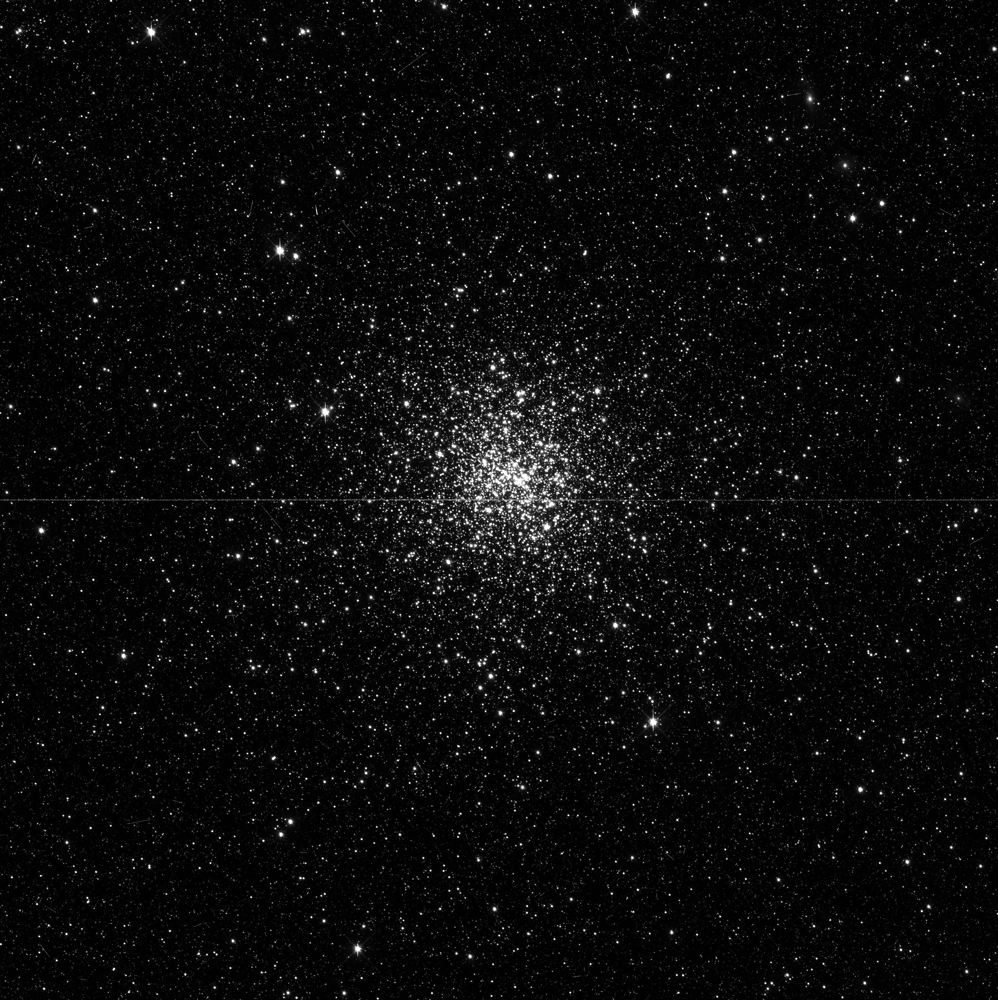
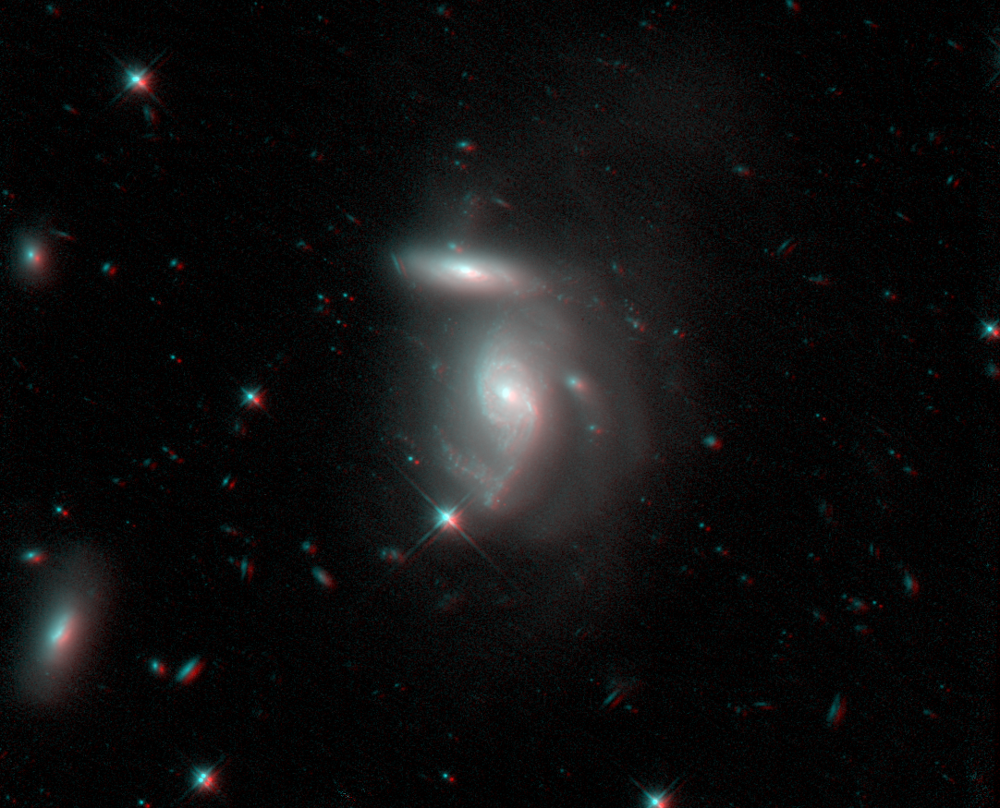
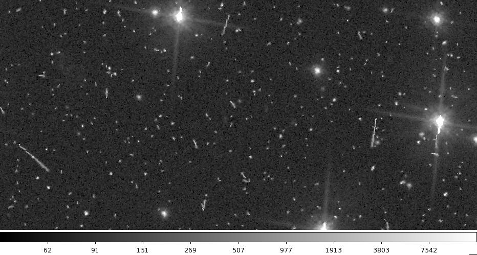
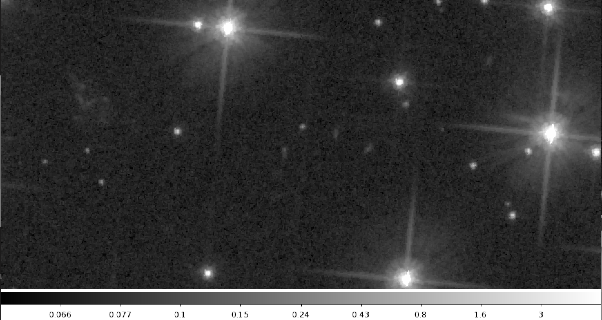
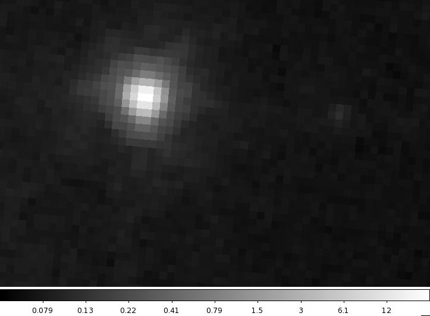
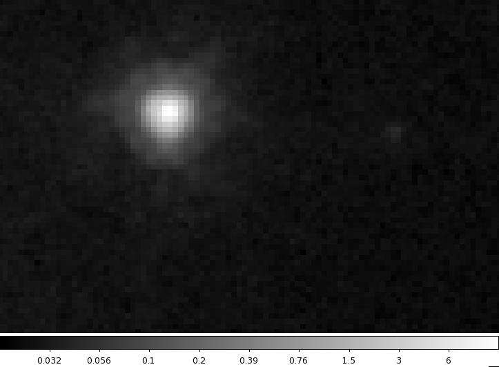

Using DrizzlePac¶
Authors: Varun Bajaj, Roberto Avila
Version 1.0 July 2016
DrizzlePac is a python package used for spatially aligning and combining Hubble Space Telescope (HST) image data. It was created to replace and improve upon the functionality of MultiDrizzle. The main workhorse of DrizzlePac is the task AstroDrizzle. This task provides many improvements to HST images, creating cleaner images and allowing for much more accurate photometry. In fact, DrizzlePac/the AstroDrizzle algorithms have been used to create many of your favorite famous HST images!
This intention of this document is to give a basic overview of the DrizzlePac workflow for HST images. Over the course of this training, you will find a number of exercises. Please save any plots/meaningful output so you trainers may review your work. For more information on AstroDrizzle/DrizzlePac consult the DrizzlePac webpage and the many links presented there.
Introduction¶
The original Drizzle algorithm was created to combine the many exposures used to create the Hubble Ultra Deep Field. Since then the software has gone through many iterations to become DrizzlePac, which offers a wide variety of tools to correct, align, and combine images.
Until now, you may have only looked at image data processed solely by the calibration pipelines (calwf3, calacs). AstroDrizzle takes the individual products of these pipelines and makes a final, improved product that may have corrected several things including but not limited to:
- Geometric distortion
- Bad Pixels
- Cosmic rays
- Blobs
- Chip gaps
Drizzle is able to fill in pixels affected by these artifacts by replacing them with other ‘good’ pixels in your stack.
Geometric Distortion¶
To correct for the spherical aberration of Hubble’s primary mirror, corrective optics were required to produce usable data. In the current generation of imagers, this correction causes distortion in the cameras’ field of view, as the detectors are tilted relative to the focal plane. This, in turn, creates a slight pixel area gradient across the detectors as well as a skewed, non-rectangular field of view. In this state, astrometric alignments/measurements are near impossible. DrizzlePac is able to correct for this using distortion correction reference files provided by the instrument teams at STScI.
{kind=link}
Distorted image with the chip gap collapsed. (Click for full size.)

Undistorted Drizzled image. Note the shape of the field of view, and the chip gap in the middle. (Click for full size.)
Detector Artifacts¶
The detectors aboard both ACS and WFC3 feature a small, but non-negligible, number of pixels classified as ‘bad’. These may be warm/hot pixels, unstable pixels, unbonded pixels, or pixels that are entirely dead. In the case of WFC3/IR blemishes with lower than expected sensitivity (‘blobs’) are created by issues elsewhere in the optical path. These pixels are generally detrimental to obtaining good, photometrically accurate images. In addition, cosmic rays are constantly bombarding the detectors. Due to the high energies of these particles HST images show bright speckles/streaks (which do not correspond to any real source), especially in images with longer exposure times. Instrument channels featuring multiple detector chips, such as WFC3/UVIS and ACS/WFC, have gaps in-between the chips (chip gaps). These gaps are the width of several pixels so single exposures from these instrument channels are bisected by a gap in which no data is recorded (as there are no pixels there).
To fix these issues, dithered exposures are taken in flight and combined later by AstroDrizzle.
Dithering¶
Dithering is the repointing of the telescope within a single visit to shift targets onto different pixels from exposure to exposure. This process moves sources that may have been on problematic pixels onto pixels unaffected by detector artifacts (an example of two dithered exposures of NGC-1856 is provided below).
{kind=link}
Notice in the example above how the target moves across the chip gap (visible as a thin line through the middle of the image), so the regions of the target placed in the gap in the first exposure can be recorded in the following exposure. Bad pixels in a single exposure are rejected and filled in with good pixels from other exposures when multiple exposures are ultimately combined in the Drizzle process.
In addition, dithering subpixel distances can allow for better sampling of the point spread function (PSF). This PSF subsampling can be used to achieve a higher resolution in the final Drizzled image.
Drizzle Process¶
The actual process used to ‘drizzle’ and image consists of several steps. Roughly, they are:
- Alignment of input images (TweakReg)
- Create bad pixel mask (AstroDrizzle)
- Sky subtraction (AstroDrizzle)
- Drizzle single undistorted images (AstroDrizzle)
- Create median image (AstroDrizzle)
- Blot median image back to distorted frame (AstroDrizzle)
- Create cosmic ray mask (AstroDrizzle)
- Create final undistorted, combined image (AstroDrizzle)
- PROFIT! (Science/pretty pictures)
Before any drizzling is actually done, images must be properly aligned. The alignment process uses a module in DrizzlePac called TweakReg.
Steps one through seven are the main steps of the AstroDrizzle process. Steps one through three remove distortion and reject any permanently ‘bad’ pixels (dead pixels, blobs, etc) whereas steps four through six flag and reject cosmic rays. Step 7 creates the final optimized Drizzled product which can be used for step 8 at your leisure.
Alignment¶
Images taken within the same visit are usually aligned (registered) to each other and often do not need to be registered. However, uncertainties in the guide star catalog introduce errors in the pointing of the telescope, so images taken in separate visits should not be assumed to be aligned. An example of misaligned images is shown below:
{kind=link}
The first image (shown in red) is clearly offset from the second (shown in cyan) by nearly 10 pixels (roughly an arcsecond). In general an alignment within 0.1 pixels is considered good.
Pixel positions are mapped to positions on the sky (RA/Dec) via the world coordinate system (WCS). Naturally, the positions of sources should have the same sky coordinates between exposures (this obviously isn’t always the case for objects with large proper motions). Misaligned images like the example above show the same sources having different sky positions- an error that must be rectified before running AstroDrizzle. To do this, the WCS of the input images must be ‘tweaked’ so the positions of the sources match across all of the images.
The zeroth step in the drizzle process is making sure the images are aligned. The next section will guide you through aligning images using TweakReg. The example images we use feature the open cluster NGC 6791 from program 9815. Note that these images have many subpixel dithers, which will allow you to subsample the PSF and increase your final resolution!
Exercise
Copy the *flc.fits files from /grp/hst/riab/training/drizzle to a directory to use for these training exercises.
| Rootname | Targname | Date-obs | Filter | Exptime |
|---|---|---|---|---|
| j8ny01svq_flc.fits | NGC6791 | 2003-07-16 | F606W | 1142.0 |
| j8ny01szq_flc.fits | NGC6791 | 2003-07-16 | F606W | 1142.0 |
| j8ny01t5q_flc.fits | NGC6791 | 2003-07-16 | F606W | 1185.0 |
| j8ny01t9q_flc.fits | NGC6791 | 2003-07-16 | F606W | 1185.0 |
| j8ny01tfq_flc.fits | NGC6791 | 2003-07-16 | F606W | 1185.0 |
| j8ny01ttq_flc.fits | NGC6791 | 2003-07-16 | F606W | 1185.0 |
| j8ny02zyq_flc.fits | NGC6791 | 2003-07-17 | F814W | 1185.0 |
| j8ny02yvq_flc.fits | NGC6791 | 2003-07-17 | F814W | 1142.0 |
| j8ny02z1q_flc.fits | NGC6791 | 2003-07-17 | F814W | 1142.0 |
| j8ny02zdq_flc.fits | NGC6791 | 2003-07-17 | F814W | 1185.0 |
| j8ny02zkq_flc.fits | NGC6791 | 2003-07-17 | F814W | 1185.0 |
| j8ny02ztq_flc.fits | NGC6791 | 2003-07-17 | F814W | 1185.0 |
Open some of the images in ds9 and press Match -> Frame -> WCS. Notice that images from the Visit 01 (j8ny01*flc.fits) are well aligned to one another, but images from the Visit 02 (j8ny02*flc.fits) are not aligned with Visit 01.
TweakReg¶
The alignment process via TweakReg consists of a few steps:
- Make a catalog of point source pixel positions for each input image and reference image via a source finding algorithm similar to IRAF’s
DAOFINDtask - Convert the pixel position catalogs to sky position catalogs (accounting for geometric distortion)
- Find common source positions between reference and input image catalogs
- Calculate the shifts, rotation and scale needed to align sky positions of sources in the input images
- Update the input image headers with the newly calculated WCS information
You can run TweakReg through PyRAF or Python, though it’s strongly recommended to stick to Python (as PyRAF/IRAF support is being discontinued by STScI). Enter your astroconda environment and open a Python shell of your choice (IPython/IPython notebook will likely work the best). Many tasks that originated from IRAF (such as the tasks in DrizzlePac) be run through the teal GUI:
>>> import glob
>>> from stsci.tools import teal
>>> from drizzlepac import tweakreg
The updatewcs parameter has been removed from some of the Drizzlepac tasks. It may sometimes be necessary to run this task to get the correct geometric distortion headers keywords and file extensions incorporated into the files. To run this task do the following:
>>> from stwcs import updatewcs
>>> updatewcs.updatewcs(yourfile)
Do this for all of your files and you can continue on to your regularly scheduled TweakReg :
>>> teal.teal('tweakreg')
Though not practical for scripting, the GUIs are helpful when learning how to use the tasks. Clearly, there are many parameters to play with, but for now we’ll go over the most important ones. In the TweakReg parameters window:
- Again, set the input parameter to
*flc.fits.- Set the updatewcs parameter to
Yesso TweakReg can incorporate the geometric distortion into the alignment.- Set the refimage parameter to
j8ny01svq_flc.fits(or any one of the other input images). All of the input images will be aligned to the refimage.- Set expand_refcat to
No. This allows TweakReg to add unmatched sources from input images to the reference image source catalog on the fly (this is great for mosaicking!).- Set enforce_user_order to
No. This lets TweakReg come up with an optimal order of input images when computing alignment transformations.- Set reusename to
Yes.
The first (and probably most important) step of TweakReg is building a catalog of sources in the input and reference images. The relevant parameters for this step are within the imagefind Parameters and refimagefind Parameters sections:
- Press the refimagefind Parameters button and set conv_width to
3.5for WFC3/UVIS and ACS/WFC (2.5for WFC3/IR). In general, this number should be about twice the FWHM of the PSF in your image.- For peakmin and peakmax use an image viewer (such as DS9 or ATV) to inspect the cores of the stars and set these parameters based on the range of values you see. These parameters set the brightness cutoffs for stars used in alignment.
- For WFC3/UVIS and ACS/WFC set the threshold high (try
100.0for now) to avoid detection of cosmic rays and other spurious sources. This is the detection threshold for sources in number of standard deviations above the background.- Press Save & Quit then the imagefind Parameters button and input the same values from the refimagefind Parameters GUI. This tells TweakReg how to do source finding for the input images. Note that if your reference image is quite different than your input image (different filter, detector, scale etc) these parameter do not have to match those in the refimagefind Parameters.
You can now run TweakReg from this GUI by pressing Execute, or you can run via Python command. To do the latter press Save & Quit and type in your Python shell:
>>> tweakreg.TweakReg(glob.glob('*flc.fits'))
The parameter values you populated in the GUI are saved and used when you call TweakReg through the command. However, if you do not want to use the GUI at all, you can set all of the parameters within the TweakReg call:
>>> findpars = {'threshold':100.,'conv_width':3.5,'peakmin':1000.,'peakmax':40000.}
# Parameters in sub parameter windows are passed as dictionaries
>>> tweakreg.TweakReg(glob.glob('*flc.fits'), reusename=True, expand_refcat=False, enforce_user_order=False,
... updatewcs=True, refimage='j8ny01svq_flc.fits', imagefindcfg=findpars,
... refimagefindcfg=findpars)
TweakReg will then output a number of messages detailing the sources, matches, and shifts that were found and will also make plots that help indicate the quality of alignment solution:
(Top left) Two-dimensional histogram showing the offsets found for all of the sources matched. Nearly all of the sources matches should have the same offsets, which corresponds to the peak of the histogram (hard to spot, but in the center of this example plot). (Top right) Vector residual plot for the matched sources, showing the residual between the peak of the histogram (the used offset) and calculated offset for each source, plotted by pixel position. (Bottom) Residuals in X and Y, plotted as functions of X and Y. The residual and vector residual plots should look fairly random, if any correlation is seen, this is an indicator of a poor alignment solution or issue with the data (i.e. incorrect distortion information, proper motion).
If the residuals do not show any systematics and are small enough (<0.1 pixels) to indicate good alignments then TweakReg can be rerun with the parameter updatehdr set to Yes in the GUI or given as the keyword updatehdr=True in the call from Python. Do the same for the shiftfile parameter. This flag updates the WCS information in the header to a new, aligned WCS. When all the images are aligned, you can then proceed to run AstroDrizzle.
Exercise
Align your images using TweakReg. Keep your shiftfile (defaults to shifts.txt) and tweakreg.log file for submission to your trainer.
AstroDrizzle¶
To combine the images, you will be using AstroDrizzle, the powerhouse of DrizzlePac. All of the exposures taken in a single filter will contribute to a single, Drizzled end result. As such you will have one final F606W image, and one final F814W image. In this example, you’ll first start with the F606W image (this corresponds to the j8ny01*flc.fits files).
AstroDrizzle can be ran similarly to TweakReg, either through a IRAF/PyRAF, a GUI, or directly through Python. First, take a look at the GUI:
>>> from drizzlepac import astrodrizzle
>>> teal.teal('astrodrizzle')
Clearly there are a lot of parameters, but notice how the interface is broken into sections for each of the drizzle process steps described previously.
To start, you will create a basic Drizzled image for F606W, without optimizing any parameters:
- Set the input to
j8ny01*flc.fits. Input can either be passed as a string with wildcards, or a list if passing directly from Python.- Set the output to
F606W_derp, this is what your output file will be named, with the extension_drc.fitsappended to the end.- Set build to
YesorTrueif passing from Python.- Set preserve to
NoorFalse. If set toTruea copy of the input images would be backed up to a subdirectory, which is unnecessary in this case.- Press the
Update From MDRIZTABbutton or passmdriztab=Falsein Python. The mdriztab is a master table of drizzle parameters for a given instrument with the standard set of parameters used by the Archive. These parameters are okay for getting a general preview image, but are not optimized for getting the best Drizzled product.
To run, press Execute or run the command in Python similarly to how you ran the TweakReg command. You’ll notice that a large number of new files are put into your directory. Many of these files are the masks and transformed images that the Drizzle algorithm uses to produce your undistorted, clean image. Often times the cosmic ray mask files (cr_mask) can be used for other purposes (if you only want to sample the good pixels in the input images).
Take a look at your output image using ds9 or a viewer of your choice. Compared to the individual FLC images, you should see a much cleaner image without distortion, cosmic rays and other artifacts:
 {kind=link}
{kind=link}
However, you can do even better! Depending on what your final goal is, different parameters need to be optimized. Since we’re looking at a star cluster, let’s assume that you’re trying to get accurate photometric results with a better sampling of the PSF. Some of the relevant parameters are the following (refer to the AstroDrizzle documentation pages to find these ones):
- Set clean and in_memory to
True. This will get rid of the intermediate masks/images at the end (you wont need them for the remainder of the exercise).- Set mdriztab to
False(or your optimized parameters will be ignored).- Keep the sky subtraction method at
localmin(don’t change it). The previous version of this guide wanted you to usematch, but it just resulted in errors.- The default WCS drizzle creates should not be used, as you will be specifying the following WCS parameters.
- The image axes should be transformed to have North up (and naturally, East left).
- The output pixel scale should be 0.03’’ per pixel. Note that this is significantly better than the 0.05’’ per pixel scale of your input image, giving you much better resolution.
- Set the pixel shrinking factor to 0.6. Hint: these last four parameters are under step 7/7a.
Note
In general, choosing proper values for last two parameters is crucial, as these are what lay at the heart of the Drizzle algorithm. They dictate how pixels corresponding to the same spatial location are combined, which has direct consequences on the resolution/PSF sampling and quality of the final image. For brevity, further discussions of the effects of these parameters are not included in this document.
For further information (especially relevant if drizzling in the future) consult the DrizzlePac homepage, and Chapter 2 of the DrizzlePac Handbook.
Run AstroDrizzle again with these updated parameters (change the output name to something else so it doesn’t overwrite your first image). Compare your optimized product to your original one (matching the frame WCS and blinking between them in ds9 is a good way to see the differences). Notice the better spatial resolution, especially when looking at the cores of unsaturated stars:
 {kind=link}
{kind=link}
Exercise
Create an optimized product for the F814W images. Use the optimized F606W image as your reference image (look in step 7/7a for the relevant parameter). Keep both of the optimized products for submission to your trainer.
Weight Image¶
So far, you’ve taken a look at the science image produced by Drizzle. This is a very basic way to check that Drizzle did an okay job combining the individual exposures. However, another way to check this is to look at the second extension of the DRC image. This extension is the weight image, which by default says how much exposure time went into each pixel of the science image (there are other weighting scales to use, with various advantages).
The weight image from the drizzling process for the F606W product.
The darker gray regions show where where Drizzle rejected cosmic rays/bad pixels, so those output image pixels have slightly less exposure time. The black lines show where Drizzle rejected all of the input pixels (due to saturation), resulting in 0 exposure time used for these pixels. In a good combination, these spots/lines should only be seen on bad pixels, saturated pixels, cosmic rays, and the other artifacts discussed previously. If the real sources (an entire PSF, for instance) in the science image appears in the weight image, then the combination incorrectly identified the sources as cosmic rays and rejected those pixels. Often times, basic statistics on the weight image are used to determine if the parameters used in the combination were suitable or not.
Congrats! You have finished the essential DrizzlePac training. You’ve taken your first steps onto becoming a Drizzle Wizard… a Drizzard!